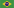
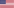

<div>
    <mat-menu #language="matMenu">
        <button mat-menu-item (click)="setLanguage('pt-br')">
             Português
        </button>
        <button mat-menu-item (click)="setLanguage('en')">
             English
        </button>
    </mat-menu>

    <button class="profile-border" mat-stroked-button [matMenuTriggerFor]="language"
        matTooltip="{{'app.choose_language' | translate}}">
        
        <mat-icon class="material-icons-outlined">expand_more</mat-icon>
    </button>
</div>